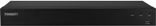
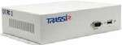
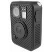
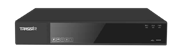
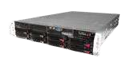
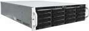
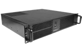

Сертификат Транспортной безопасности
Имеют сертификат транспортной безопасности, что позволяет использовать регистраторы на транспортных объектах

Имеют сертификат транспортной безопасности, что позволяет использовать регистраторы на транспортных объектах
На регистраторы установлено ПО TRASSIR (Linux), включенное в реестр российского ПО
Оборудование может быть кастомизировано под требования заказчика
Поддерживается подключение любого уровня аналитики от облака до нейросетей
Регистраторы совместимы с камерами сторонних производителей, в том числе с поддержкой протоколов ONVIF и RTSP API
приём видеопотоков от подключённых камер для наблюдения и записи.
сохранение событий на накопителях регистратора для последующего просмотра.
вывод изображения с нескольких камер на рабочее место оператора.
поиск, воспроизведение и выгрузка нужных фрагментов записи средствами установленного ПО.
выполнение поддерживаемых аналитических модулей на вычислительных ресурсах регистратора.
подключение совместимых устройств и настройка реакций на события через ПО TRASSIR.




Бюджетные видеорегистраторы с расширенным набором функций и подключением к облачному сервису
Видеорегистраторы начального уровня для подключения к TRASSIR Cloud

Производительные видеорегистраторы с поддержкой базовой модульной аналитики

Видеорегистраторы для высокопроизводительной видеоаналитики

Видеорегистраторы бизнес-класса для критически важных объектов
Персональные видеорегистраторы

Удалённые рабочие места для операторов
Надежное оборудование. Контроль качества. Поставка под задачи.

Собственный центр разработки и исследований решений для систем видеонаблюдения
Сборка оборудования и контроль качества продукции
Продукция соответствует требованиям ГОСТ и ТУ, проходит многоступенчатый контроль качества и тестирование на каждом этапе сборки.
Сборка объективов камер происходит в чистой комнате со специальными условиями
Камеры проходят автоматическое тестирование
Каждое устройство проходит длительное тестирование на стабильность работы
Подбор оборудования
От небольшой системы до сложного проекта.
Поможем выбрать подходящее решение.